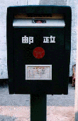
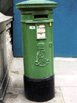
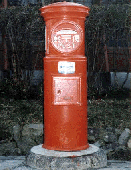
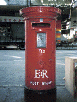

November 1997:Brugge(Belguim)
November 1997:Shanghai

文字が多分略字なのでしょうか、日本の文字とはちょっと違いますね。
April 1997:Dublin (Ireland)

December 1996:Matsuzaka (Japan)

古いタイプの物で現在では珍しい
Nethern Road (Hong Kong)

イギリス植民地時代の物であり、現在ではもう無いのかも知れない。
Last update: May 6 1998